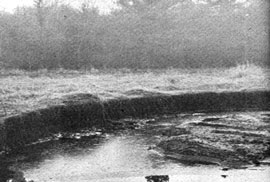
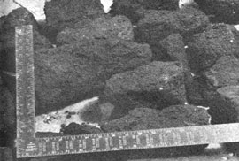

If you've got a wood or coal-burning stove these days you've got a problem. Coal just ain't what it used to be (cheap!) and good wood sometimes can be hard to come by . . . even though it does grow on trees. So how can you keep the home fires burning? Go digging. For peat's sake.
Peat is so common in the United States and Canada that most people can't see the resource for looking at it. There are an estimated eighty million acres of deposit; right here in the continental U.S. Most of this vast natural supply goes unused . . . although some people do throw a few bushels of the muck on their gardens for fertilizer and others use the more fibrous and mossy varieties as a dressing for flowerbeds. What most folks don't know, however, is that peat can be a clean-burning, efficient and low-cost fuel!
Last summer I often passed a swamp where a man was digging muck for sale as topsoil. I wondered if the wet material could be the "peat" I had heard was used for fuel in other parts of the world . . . so I obtained a few hundred pounds and dried it. The idea worked! Once lit, the chunks glowed like charcoal and gave off gases that burned with a flickering blue flame!
Peat is nothing more than partially decayed and compacted vegetable matter which-over a period of time-has accumulated where soil is wet enough to retard oxidation. Its color and consistency can be black and mucky or brown and fibrous or anything in between. Individual moors, bogs, swamps and shallow ponds each produce their own "copyrighted" variety of the material. In fact, varying types of peat are often found in layers-each formed as a result of a change in climate or vegetation-within the same marsh. You might even discover that the "turf" differs from one area of a single bed to another . . . and the bed itself might be a few inches to several feet deep. In its natural state, peat is around 95% water by weight (most of which must be dried out before burning) and frequently contains some sand.
The fuel value of peat has been utilized in Europe since the days of the ancient Greeks and Romans . . . so long, as a matter of fact, that the substance has undoubtedly played an important role in the development of western civilization. Large amounts were "coked" and used to power automobiles (run on carbon monoxide-producing generators) shortly after World War [I. Today's rural Europeans still heat their homes with peat, and in Eastern Europe the fuel is even used to fire thermal power plants. The Soviet Union alone consumes as much as sixty million tons a year!
Most peat is used close to the bogs from which it comes. Its energy potential per pound is no higher than wood and peat has only half the Btu value of coal. Production costs (on a large scale) are therefore high when compared to the fossil fuels, and long-distance transportation of the material is economically impractical. The resource is competitive, however, where other fuels are unavailable or just too blamed expensive. Peat is most frequently used by farmers who have beds of the material on their land and who can harvest the fuel merely for the labor of digging and drying.
Many more folks than do can burn peat today. Granted, there are probably some exceptionally dry areas where the material just can't be found . . . but not many. All it takes to extract the treasure is a sharp eye, some time and a little effort.
Harvesting peat is as ecologically sound as cutting wood for the firebox. Moderation is obviously the key . . . you shouldn't dig up an entire peat bed any sooner than you should level a forest with a chain saw. Just take what you need and use all you take. Remember: This fuel resource-like trees-is renewable. As long as a peat bed is kept sufficiently wet, vegetable matter will accumulate and new peat will continue to form.
OK. Let's assume you've tromped around for a while and all of a sudden-amuck-you're up to your boots in peat Congratulations! You've found your fuel supply!
If the bed is solid enough-or if you can manage to drain it somewhat so the peat is more accessible-you can cut the material into blocks with a shovel. Then you just stack the chunks and lot them dry. Sometimes-when the slabs of turf are especially wet-they should be left lying on the surface of the bed to partially dry before they're stacked.
There are any number of variations to this harvesting procedure and, with a little experience, you'll find the technique that works best for you. The whole idea is simply to remove the peat in some methodical manner and dry the material to a point where the chunks will ignite.
Peat burns pretty much the same as wood or coal and the general principles are the same: Start with a hot blaze of kindling and small pieces of wood, and place the dried fuel on top. The carbon monoxide, alcohols, acetone,, acetic acid, methane and what-have-you-contained in burning vegetable matter shouldn't be wasted or allowed to drift off into the air (in consideration for your neighbor's lungs). If the fire is given ,too much draft the temperature in the stove is lowered, the peat burns poorly and most of the heat goes up the chimney . . . along with everything else. If there's not enough air, of course, the fire suffers from lack of oxygen and the energy value of your fuel is more or less frittered away. A little practice makes perfect. The blocks I had contained 50% sand but burned anyway!
Peat is by no means a total answer to the world's energy problems . . . but it could be a partial answer (at least!) to your own how-to-heat-the-home needs. The fuel is clean, natural and ecologically sound. There is a great amount of the material here in the area where I live (Leominster, Massachusetts) and I can get a good supply for nearly nothing. I'm going to explore its use even further!
|
 The peat bog shown here has been partially drained and is actually several feet deeper than it looks. A bed of this thickness can contain 1,000 tons of fuel per acre . . . equal to 500 tons of coal! |
 These peat chunks are drying in Francis' basement . . . an essential step because ofthe newly gathered material's very high water content. The ruler is included to show the size of the pieces. |
|